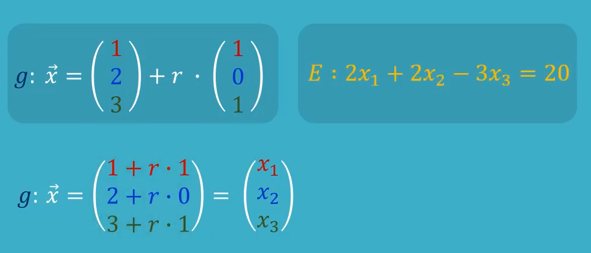
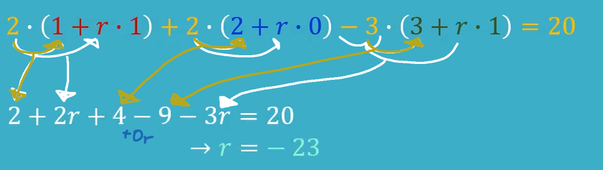
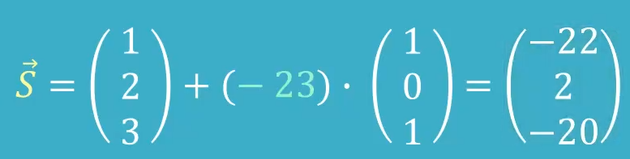

Schnittpunkt Gerade und Ebene
-
Um den Schnittpunkt einer Geraden in Koordinatenform
und einer Geraden zu ermitteln, ḿüssen wir diese Gleichsetzen.
-
Dafür gilt das Selbe Prinzip wie bei der Punktprobe
Wir setzen unsere Geradengleichung in die Ebenengleichung ein.

-
Das sollte anschließend so aussehen:
-
Dann multiplizieren wir aus (multiplizieren einzeilnd was in der Klammer steht, mit dem davor)

-
Und dann lösen wir nach
r
auf, was ich jetzt nicht im Details erklären werde.
-
Zuletzt fügen wir unser gefundes
r
in die Gleichung ein, der Erhaltene Punkt ist die Schnittstelle.

Wenn beim rechnen etwas unerwartetes passiert, was gar keinen sinn zu machen scheint, gibt es möglicherweise keinen Schnittpunkt.